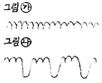

자동차정비기능사 (2006-07-16 기출문제)
1과목: 자동차공학
1. 다음 중 앞바퀴 정렬의 종류가 아닌 것은?
- 하이텐션
- 캠버
- 캐스터
- 토인
(정답률: 85%)

2. 다링톤 트랜지스터를 설명한 것으로 옳은 것은?
- 트랜지스터보다 작동 전류가 적다.
- 2개의 트랜지스터를 하나로 결합하여 전류 증폭도가 높다.
- 전류 증폭도가 낮다.
- 베이스 전류가 50A 정도 소요된다.
(정답률: 85%)
3. 토(toe)에 대한 설명으로 가장 거리가 먼 것은?
- 토인은 주행 중 타이어의 앞부분이 벌어지려고 하는 것을 방지한다.
- 토는 타이로드의 길이로 조정한다.
- 토의 조정이 불량하면 타이어의 편마모가 된다.
- 토인의 조향 복원성을 위해 둔다.
(정답률: 68%)
4. 디젤 노크의 방지 대책으로 틀린 것은?
- 세탄가가 높은 연료를 사용한다.
- 기관의 회전속도를 빠르게 한다.
- 흡입공기의 온도를 낮게 유지한다.
- 압축비를 높게 한다.
(정답률: 61%)
5. 어느 가솔린기관의 제동 연료 소비율이 250g/psh 이다. 제동 열효율은 약 몇 %인가? (단, 연료의 저위 발열량은 1⑤00kcal/kg 이다.)
- 12.5
- 24.1
- 36.2
- 48.3
(정답률: 57%)
6. 다음 중 기관 윤활의 목적이 아닌 것은?
- 마찰・마멸 감소
- 응력집중작용
- 밀봉 작용
- 세척작용
(정답률: 77%)
7. 실린더헤드 볼트를 풀 때 순서로 올바른 것은?
- 왼쪽에서부터 오른쪽 또는 오른쪽부터 왼쪽으로
- 가운데에서 바깥쪽으로
- 순서에 무관하다.
- 바깥쪽에서 가운데 쪽으로
(정답률: 83%)
8. 독립현가장치의 장점으로 가장 거리가 먼 것은?
- 스프링 정수가 적은 스프링을 사용할 수 있다.
- 스프링 아래 질량이 적어 승차감이 우수하다.
- 바퀴가 시미를 잘 일으키지 않고 로드 홀딩이 좋다.
- 하중에 관계없이 승차감은 차이가 없다.
(정답률: 84%)
9. 자동차용 기동전동기(self starting motor)에 주로 사용되는 전동기는?
- 분권식 전동기
- 직권식 전동기
- 복권식 전동기
- 교류 전동기
(정답률: 61%)
10. 전자제어 가솔린 기관에서 실린더 내 연소실의 최고 온도를 낮추기 위해서 사용되는 것은?(오류 신고가 접수된 문제입니다. 반드시 정답과 해설을 확인하시기 바랍니다.)
- EGR 밸브
- 미터링 밸브
- 오버필 리미터
- 온도 센서
(정답률: 50%)
11. 전자제어 분사장치 기관에서 에어플로센서가 하는 일로 바르게 표현된 것은?
- 공기의 흐름을 원활하게 하는 역할을 한다.
- 에어클리너 내부에 설치되어 흡입공기량을 제어한다.
- 에어클리너 내부에 설치되어 흡입공기량을 측정한 후 ECU에 보낸다.
- 에어클리너에 설치되어 흡입공기를 정화시키고 그 상태를 ECU에 보낸다.
(정답률: 74%)
12. 납산 축전지에 사용되는 전해액은?
- 과산화 납
- 황산 납
- 에틸렌글리콜
- 묽은 황산
(정답률: 62%)
13. 자동차의 최종감속기어에 일반적으로 가장 많이 사용되는 것은?
- 스퍼기어
- 하이포이드 기어
- 워엄기어
- 스플라인기어
(정답률: 72%)
14. 전자제어 연료분사 장치의 연료분사 방식 중 동시분사방식에 대해 옳게 설명한 것은?
- 크랭크샤프트 2회전마다 전기통(모든 실린더)동시에 1회 분사한다.
- 크랭크샤프트 1회전마다 전기통(모든 실린더)동시에 1회 분사한다.
- 점화 순서에 따라 흡입행정 직전에 분사된다.
- 흡입 또는 압축행정 직전에 있는 실린더에만 동시에 분사된다.
(정답률: 43%)
15. 변속기의 필요성과 가장 거리가 먼 것은?
- 엔진의 회전력을 증대시키기 위하여
- 엔진을 무부하 상태로 있게 하기 위하여
- 자동차의 후진을 위하여
- 바퀴의 회전속도를 추진축의 회전속도보다 높이기 위하여
(정답률: 54%)
16. 행정의 길이 200㎜인 가솔린 기관에서 피스톤의 평균속도를 5m/s라면, 크랭크축의 1분간 회전수는?
- 75rpm
- 150rpm
- 750rpm
- 1500rpm
(정답률: 55%)
17. 피스톤의 측압과 가장 관계있는 것은?
- 커넥팅 로드 길이와 행정
- 피스톤 무게와 회전수
- 배기량과 실린더 직경
- 혼합비와 기통수
(정답률: 55%)
18. 기관의 회전속도가 1800rpm, 변속기의 변속비가 3:1, 종감속비가 6:1인 자동차에서 오른쪽 바퀴를 고정시키고 왼쪽 바퀴만을 회전토록 한다면 회전수는 몇 rpm인가?
- 100
- 200
- 300
- 600
(정답률: 47%)
19. 실린더와 피스톤의 간극이 과대시 발생하는 현상이 아닌 것은?
- 압축 압력의 저하
- 오일의 희석
- 피스톤 과열
- 백색 배기가스 발생
(정답률: 48%)
20. 기동전동기에서 회전력을 기관의 플라이휠에 전달하는 것은?
- 피니언 기어
- 아마츄어
- 브러시
- 시동 스위치
(정답률: 75%)
2과목: 자동차정비 및 안전기준
21. 전자제어 기관의 흡입 공기량 측정에서 출력이 전기 펄스(Pulse, digital) 신호인 것은?
- 벤(Vane)식
- 칼만(Karman) 와류식
- 열(熱)식
- 에어 밸브(Air Valve) 식
(정답률: 74%)
22. 자동변속기에 관계되는 일반적인 사항을 나열하였다. 틀린 것은?
- “P" 위치에서는 주차 기능이 있어야 한다.
- 처음 시동시 선택 레버 위치가 “N" 또는 "P" 위치에서만 시동되어야 한다.
- “D"위치에서 주행 후 시동을 끄고, 재차 시동을 했을 때는 시동이 걸려야 한다.
- “R"위치에서는 백업등(Back-up Lamp)이 점등되어야 한다.
(정답률: 80%)
23. 전자제어 자동차의 인젝터 분사시간에 대한 설명으로 틀린 것은?
- 급가속 시에는 순간적으로 분사시간이 길어진다.
- 축전지 전압이 낮으면 무효 분사시간이 길어진다.
- 급 감속 시에는 경우에 따라 연료공급이 차단된다.
- 산소센서의 전압이 높으면 분사시간이 길어진다.
(정답률: 48%)
24. MPI 구성요소 중 맵 센서(MAP Sensor)에 대한 설명이다. 틀린 것은?
- 배기 공기량을 측정하는 센서이다.
- 흡기 매니폴드의 압력 변화를 전압으로 환산하여 흡입 공기량을 간접 측정한다.
- 점화스위치가 ON일 때, 맵 센서 출력 전압이 3.9~4.1V이면 정상이다.
- 서지 탱크와 호스연결이 불량할 때 맵 센서내의 공기흐름이 방해를 받는다.
(정답률: 53%)
25. 자동차가 고속을 선회할 때 차체의 좌우 진동을 완화하는 기능을 하는 것은?
- 타이로드
- 토인
- 겹판 스프링
- 스태빌라이저
(정답률: 75%)
26. 추진축이 진동하는 원인이 아닌 것은?
- 요크 방향이 다르다.
- 플랜지부를 규정보다 조금 세게 조였다.
- 십자축 베어링과 중간 베어링이 마모되었다.
- 밸런스 웨이트가 떨어졌다.
(정답률: 76%)
27. 트랜지스터식 점화장치의 점화 신호로 쓰이는 크랭크각 센서 종류가 아닌 것은?
- 유도형 크랭크각 센서
- 광학형 크랭크각 센서
- 홀센서형 크랭크각 센서
- 전류차단형 크랭크각 센서
(정답률: 52%)
28. 기관에 대한 설명 중 내용이 틀린 것은?
- 로터리식 오일펌프의 인너로터와 아웃트 로터와의 간극 점검은 시크니스 게이지를 이용하여 측정한다.
- 플라이휠은 폭발행정의 힘을 축적하였다가 그 타력으로 회전을 원활하게 하는 역할을 한다.
- 가압식 라디에이터의 부압밸브는 라디에이터 내의 압력이 부압으로 되었을 때의 열린다.
- 팬벨트가 풀리 홈 밑 부분에 닿아 미끄럼이 있을 때는 벨트를 팽팽히 한다.
(정답률: 45%)
29. 전자제어 현가장치 작동을 위한 압력 센서가 아닌 것은?
- 차속 센서
- G 센서
- 조향 휠 각속도 센서
- 액츄에이터
(정답률: 54%)
30. 가솔린 기관의 압축압력을 측정할 때 틀린 것은?
- 기관을 작동 온도로 한다.
- 엔진 오일을 넣고도 측정한다.
- 기관의 회전을 750rpm으로 한다.
- 기관의 점화 플러그는 모두 뺀다.
(정답률: 53%)
31. 엔진의 회전수가 2200rpm 이고 변속비가 4:1, 종감속비가 5.5:1 이다. 이 차의 왼쪽 바퀴가 45rpm이였다면 이 차의 오른쪽 바퀴의 회전수는?
- 5⑤rpm
- 355rpm
- 145rpm
- 155rpm
(정답률: 42%)
32. 그림 중 ㉮는 정상적인 발전기 충전 파형이다. ㉯와 같은 파형이 나올 경우 맞는 경우?

- 브러시 불량
- 다이오드 불량
- 레귤레이터 불량
- L(램프)선이 끊어졌음
(정답률: 57%)
33. 다음 설명 중 옳지 않은 것은?
- 기동 전동기의 오버 런닝 클러치는 엔진이 시동되었을 때 기동 전동기가 크랭크축에 의하여 구동되지 않게 한다.
- 자동차의 축전지를 급속 충전할 때는 반드시 축전지 단자 선을 떼고 한다.
- 전압조정기의 조정전압은 축전지 단자 전압보다 낮다.
- A.C 발전기의 다이오드는 교류를 직류로 변하게 하고 축전지에서의 역류를 방지하는 역할을 한다.
(정답률: 47%)
34. 전자제어 분사장치 자동차가 열간 시 시동이 잘 안 걸리는 원인 중 잘못 된 것은?
- 인젝터 불량
- 연료 압력 레귤레이터 불량
- 흡기 매니홀드 개스킷 불량
- 산소 센서 불량
(정답률: 53%)
35. 다음 중 ABS의 해제 조건이 아닌 것은?
- 브레이크 S/W off
- 바퀴의 슬립
- 차량속도 증가
- 차량속도 감소
(정답률: 44%)
36. LPG 기관에서 액체를 기체로 변화시켜 주는 장치로 가장 적당한 것은?
- 솔레노이드 스위치
- 베이퍼라이저
- 봄베
- 프레히이터
(정답률: 82%)
37. 구동력 조절장치(TCS)의 조절방식의 종류에 속하지 않는 것은?
- 기관의 회전력 조절방식
- 구동력 브레이크 조절방식
- 기관과 브레이크 병용조절방식
- 기관회전수와 동력전달 조절방식
(정답률: 35%)
38. 보쉬형 연료 분사펌프의 분사시기를 조정하는 장치는?
- 피니언과 슬리브
- 펌프와 타이밍기어의 커플링
- 랙크와 피니언
- 조속기의 스프링
(정답률: 67%)
39. 축전지를 급속 충전할 때 축전지의 접지 단자에서 케이블을 떼어내는 이유는?
- 과충전을 방지하기 위함이다.
- 발전기의 다이오드를 보호하기 위함이다.
- 조정기 접점을 보호하기 위함이다.
- 충전기를 보호하기 위함이다.
(정답률: 64%)
40. 토크 변환기에서 펌프와 터빈의 속도비가 거의 같아졌을 때 스테이터는 어떤 운동을 하는가?
- 공전한다.
- 터빈의 방향으로 더 빠른 속도로 회전한다.
- 정지한다.
- 터빈과 같은 속도로 반대 방향으로 회전한다.
(정답률: 61%)
3과목: 안전관리
41. 기동전동기에서 오버 런닝 클러치의 구조에 해당되지 않는 것은?
- 롤러식
- 스프래그식
- 기어식
- 다판클러치식
(정답률: 38%)
42. 컨트롤 릴레이에서 전원을 공급해 주는 곳이 아닌 것은?
- 인젝터
- 연료펌프
- ECU
- 기동전동기
(정답률: 44%)
43. 2행정 사이클(Cycle) 엔진에서 평균유효압력 5kgf/㎠인 한 개의 기통(cylinder)이 한 번 폭발할 때 일(work)이 20kgf-m이라고 한다. 이 때 배기량(행정용적)은?
- 300cc
- 400cc
- 500cc
- 600cc
(정답률: 61%)
44. 배기가스 중의 유해 물질 중 고온고압에 의하여 생성되는 물질은 어느 것인가?
- Pb(C2H5)44
- NOX
- HC
- CO
(정답률: 66%)
45. 전자제어 기관 인젝터의 분사량에 영향을 주지 않는 것은?
- 모터포지션센서(MPS)
- 산소(O2)센서
- 냉각수온센서(WTS)
- 공기유량센서(AFS)
(정답률: 54%)
46. 다음 중 차대번호를 재 표기할 수 있는 부득이한 사유로 인정할 수 없는 것은?
- 자동차에 차대번호 또는 원동기형식의 표기가 없거나 표기 방법 및 체계가 등록번호판제식에 관한 고시에 적합하지 않을 때
- 자동차의 차대번호 또는 원동기형식의 표기가 다른 자동차의 표기와 유사할 때
- 자동차가 사고로 파손되어 프레임 또는 차체의 전체를 교환하여 정비하고자 할 때
- 표기시행자인 자동차 제작자가 차대번호 또는 원동기형식을 잘못 표기한 자동차를 판매한 경우
(정답률: 45%)
47. 긴급자동차의 경광등은 1등당 광도가 135cd 이상 몇 cd이하이어야 하는가?
- 1500
- 2000
- 2500
- 3000
(정답률: 41%)
48. 공차상태 조향륜의 하중분포(%)를 구하는 식으로 맞는 것은?
- (차량총중량/접지면적) × 100
- (전륜접지압력/차량중량) × 100
- (공차시조향륜의윤중의합/차량중량) × 100
- (차량중량/공차시조향륜의윤중의합) × 100
(정답률: 48%)
49. 자동차가 접지부분 이외의 부분은 지면과의 사이에 몇 cm이상 간격이 있어야 하는가?(오류 신고가 접수된 문제입니다. 반드시 정답과 해설을 확인하시기 바랍니다.)
- 12
- 15
- 20
- 25
(정답률: 48%)
50. 자동차 전조등의 등광색으로 맞는 것은?
- 적색 또는 담황색
- 백색
- 녹색 또는 백색
- 적색
(정답률: 64%)
51. 다음 중 압축공기를 이용한 공구를 사용할 필요가 없는 작업은?
- 타이어 교환 작업
- 클러치 떼어내기와 설치하기
- 축전지 단자 케이블 연결
- 엔진 분해 조립
(정답률: 71%)
52. 윤활유의 인화점, 발화점이 낮을 때 발생할 수 있는 것은?
- 화재발생의 원인이 된다.
- 연소불량 원인이 된다.
- 압력 저하 요인이 발생한다.
- 점성과 온도관계가 양호하게 된다.
(정답률: 57%)
53. 스패너의 사용시 주의할 사항 중 틀린 것은?
- 스패너 손잡이에 파이프를 이어서 사용하는 것은 가급적이면 하지 말 것
- 스패너 사용시 항시 주위를 살펴보고 조심성 있게 죌 것
- 스패너는 당기지 말고 밀어서 사용할 것
- 스패너와 너트 사이에 절대 다른 물건을 끼우지 말 것
(정답률: 75%)
54. 다이얼 게이지로 휨을 측정할 때 측정부의 위치는?
- 보기 좋은 위치에 놓는다.
- 공작물에 수직으로 놓는다.
- 공작물의 우측으로 기울이게 놓는다.
- 공작물의 좌측으로 기울이게 놓는다.
(정답률: 82%)
55. 작업장에서 작업복을 착용하는 이유로 가장 적합한 것은?
- 작업자의 질서를 확립시키기 위해서
- 작업 능률을 올리기 위해서
- 재해로부터 작업자의 몸을 지키기 위해서
- 작업자의 복장 통일을 위해서
(정답률: 85%)
56. 다음의 동력전달장치 중 재해가 발생하는 빈도가 가장 높은 것은?
- 축
- 벨트
- 기어
- 커플링
(정답률: 75%)
57. 차량에서 허브(hub)작업을 할 때 지켜야 할 사항으로 가장 적당한 것은?
- 잭(jack)으로 받친 상태에서 작업한다.
- 잭(jack)과 견고한 스탠드로 받치고 작업한다.
- 프레임(frame)의 한쪽을 받치고 작업한다.
- 차체를 로프(rope)로 고정시키고 작업한다.
(정답률: 74%)
58. 드릴머신 작업의 안전사항이다. 틀린 것은?
- 드릴은 마모나 균열이 있는 것은 사용하지 않는다.
- 가볍고 작은 물건은 손으로 잡고 작업한다.
- 드릴의 착탈은 회전이 멈춘 다음 행한다.
- 감기기 쉬운 복장은 피한다.
(정답률: 82%)
59. 축전지를 충전할 때 화기를 가까이 하면 위험한 이유는?
- 산소 가스가 인화성 가스이기 때문에
- 수소 가스가 폭발성 가스이기 때문에
- 산소 가스가 폭발성 가스이기 때문에
- 수소 가스가 인화성 가스이기 때문에
(정답률: 71%)
60. 엔진에서 엔진오일 점검 시 틀린 것은?
- 계절 및 기관에 알맞은 오일을 사용한다.
- 기관을 수평상태에서 한다.
- 오일량을 점검할 때는 시동이 걸린 상태에서 한다.
- 오일은 정기적으로 점검, 교환한다.
(정답률: 80%)
하이텐션은 앞바퀴의 수평선과 수직선 사이의 각도를 조절하여 차량의 높이를 조절하는 방식으로, 앞바퀴 정렬의 종류가 아닙니다.
반면, 캠버, 캐스터, 토인은 모두 앞바퀴의 정렬을 조절하는 방식으로, 차량의 주행 안정성과 타이어 수명을 연장하는 역할을 합니다.